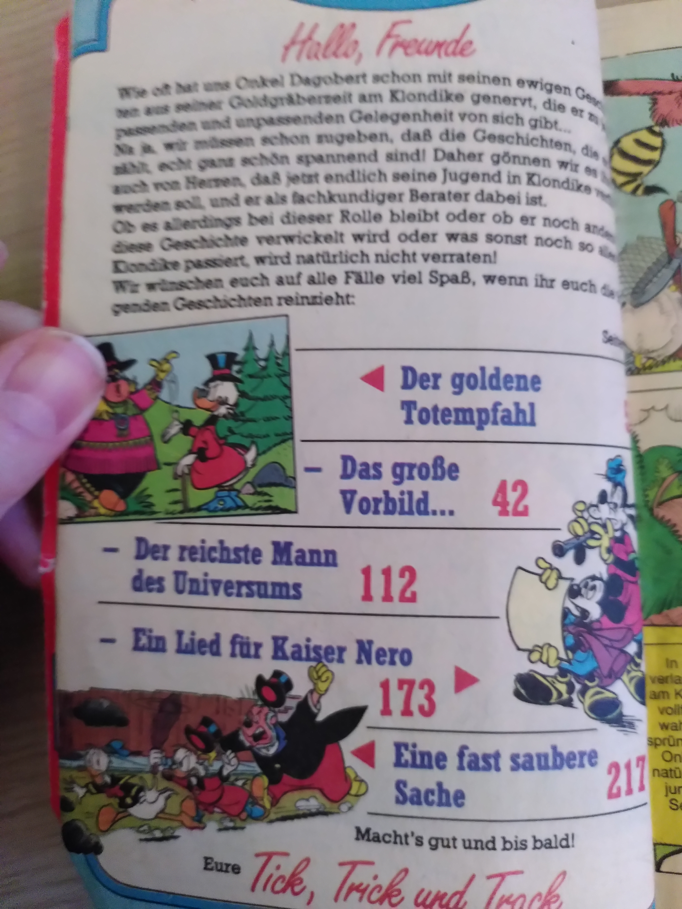
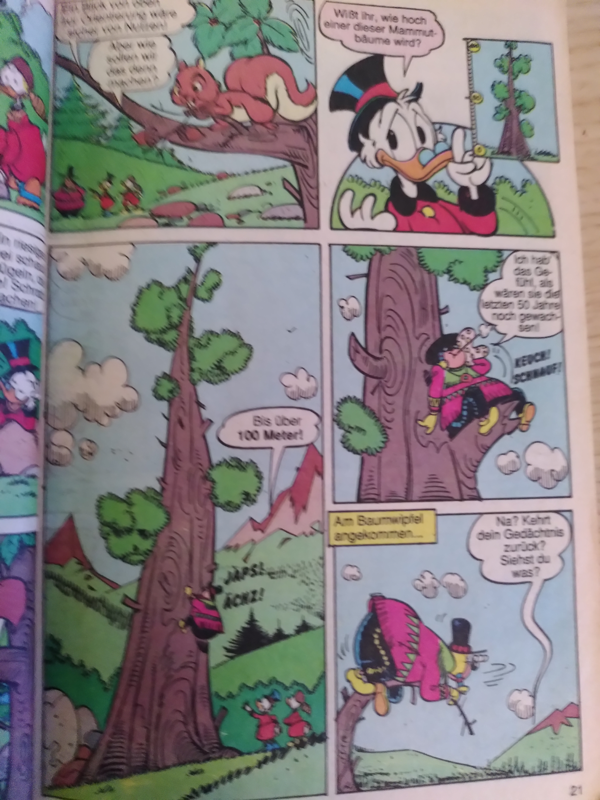
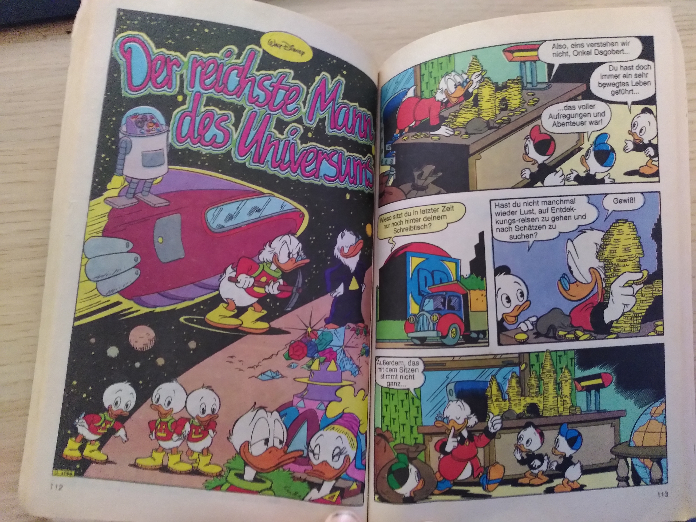
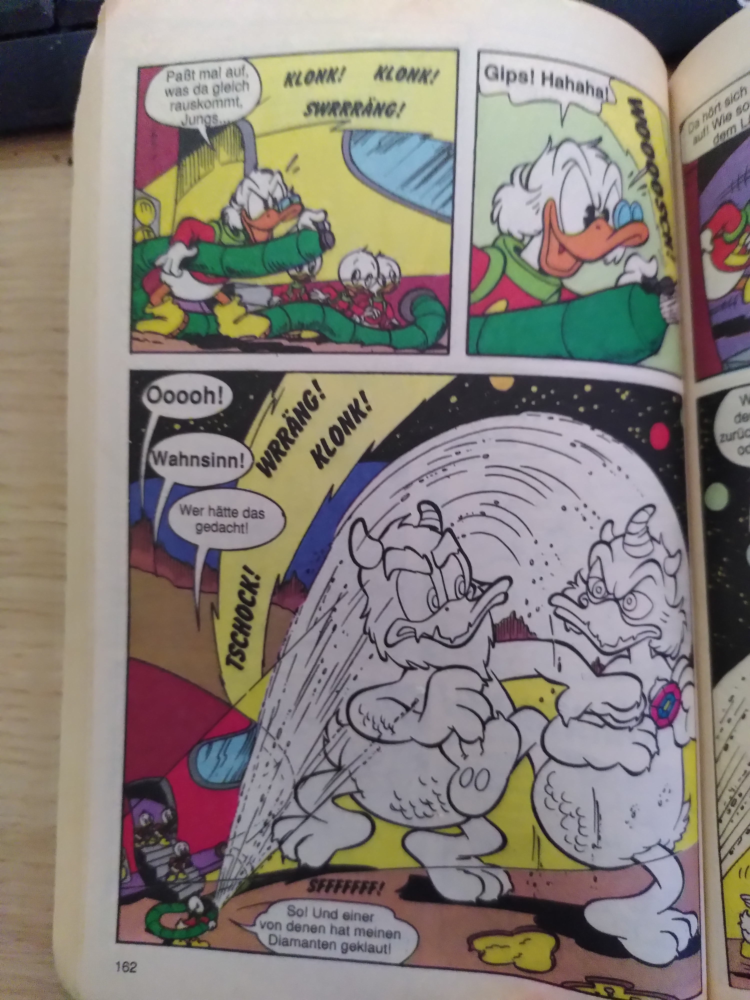

Es ist an der Zeit, einen weiteren meiner Favoriten mit Ihnen zu teilen, und das ist Entenhausen und das Entenuniversum. Ich nehme das LTB (Lustiges Taschenbuch) Nr. 162 als Beispiel aus der goldenen Ära der Comic-Serie „Lustiges Taschenbuch“


Der goldene Totempfahl (The golden totem pole)
In der Geschichte „Der goldene Totempfahl“ (englisch: „The golden totem pole“) dreht Onkel Dagobert einen Film über sein Leben. Die Geschichte spielt in der Grafschaft Dawson, wo sie sich nach einem Sturm verirren. Sie treffen den Indianer „großer Elch“ „Big Moose“ und suchen nach den Goldnuggets, die Big Moose für Onkel Dagobert in der Vergangenheit aufbewahrt hat. Der Film endet damit, dass Big Moose als Filmstar endet.


Der reichste Mann des Universums (The richest men in universe)
In der Geschichte „Der reichste Mann des Universums“ (The richest men in universe) unternimmt Onkel Dagobert mit seinen Verwandten (Neffe Donald Duck und Großneffen Tick, Trick und Track) eine Weltraumtour. Sie nehmen an einem Wettbewerb der reichsten Männer im Universum mit einem anderen Typen im Weltraum, der eine Wunschmaschine hat… Durch die Anwesenheit von Onkel Dagobert wird das empfindliche Gleichgewicht des Ökosystems gestört… (die Geschichte muss man selbst lesen ;-) )

